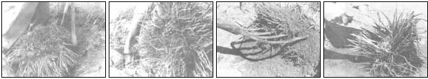

[1] The young plant on the right has round, firm roots (although a few are stunted from lack of growing space), while the roots of the ""mother plant"" (second from right [3]) are limp and exhausted. [2] Each plant you move should have a healthy crown like the one shown here, if you want it to produce edible spears when spring arrives. [4] The crowns of this asparagus are spent, but it still has some healthy roots. If planted, it will produce small, new shoots, but it will be several years be fore it yields any eating sized spears.